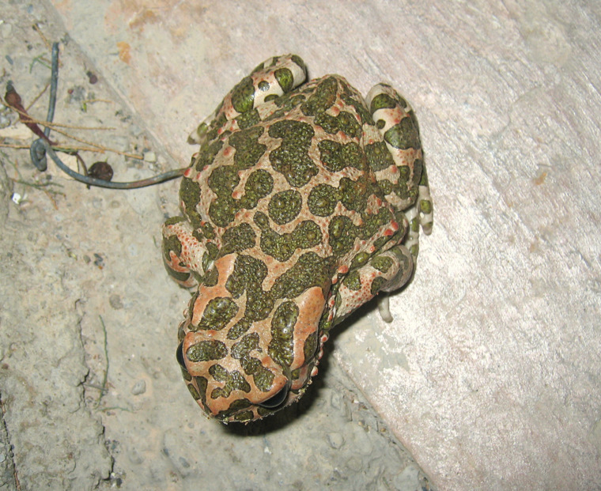
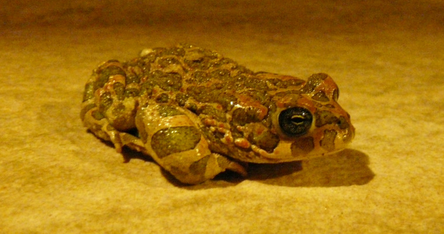
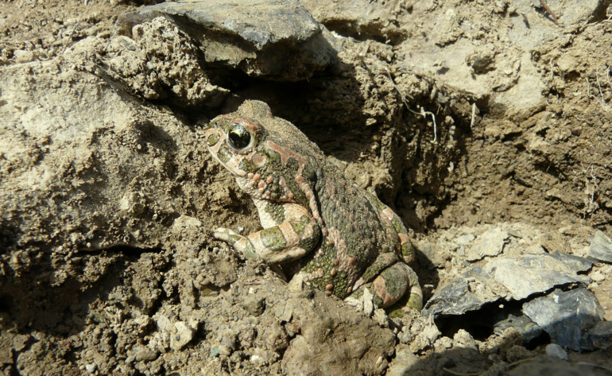

| PHRYGANA | Fauna | Flora | nouveautés | liste des espèces |
contact -
info - commentaires phrygana1 (at) gmail.com |
| Particularités crétoises | Galles et mines | ressources naturelles |
| Bufo viridis LAURENTI 1768 |
| 27 | Fauna | AMPHIBIA | Bufonidae | Bufo Laurenti 1768 |
|
 Bufo viridis Melambes (Agios Giorgos) 06 novembre 2006 |
en: Green toad fr: Crapaud vert de: Wechselkröte |
|
| Grandeur: les adultes peuvent atteindre 8 à 10 cm, les femelles étant plus grandes que les mâles | |
| Identification: crapaud trapu, avec des glandes paratoïdes presque parallèles, saillantes. La pupille est horizontale. Marbrures vertes bien marquées (variables en nombre et grandeur). | |
| Les oeufs sont pondus en longs rubans sur 2 - 4 rangées, dans la végétation aquatique ou sur le fond des mares et éclosent après une semaine. Les tétards peuvent atteindre 5 cm. A la métamorphose, le jeune crapaud atteind 15 mm. | |
| La maturité est atteinte après 3ans. | |
| Bufo viridis est actif surtout la nuit et n'hésite pas à venir chasser les insectes jusque sous les éclairages des maisons. En journée, il se cache sous une pierre, dans un terrier de rongeur ou une cavité qu'il creuse lui-même. | |
| Supporte bien la chaleur: en été se réfugie sous les pierres ou dans un terrier de rongeurs | |
| Indigénat en Crète: indigène répandu | |
| Biotopes en Crète: phrygana, plaines littorales, vallées humides, alentours des habitations | |
| Altitudes: 0 - 1000 m | |
| Distribution: Europe centrale et de l'est, Europe du sud-est. | |
| Note: Bufo viridis est une espèce relativement tolérante quant à la qualité des eaux et supporte bien la sécheresse. | |
| Menaces: le trafic routier | |
| Utilité: excellent auxiliaire de l'homme dans les jardins et parcs: insectivore vorace | |
|
 Bufo viridis Melambes (Agios Giorgos) 10 octobre 2009 |
 Bufo viridis Melambes (Agios Giorgos) 09 janvier 2010 |
| 25 janvier 2012 |
| © paul fontaine -- © Phrygana.eu 2007 -- 2013 |